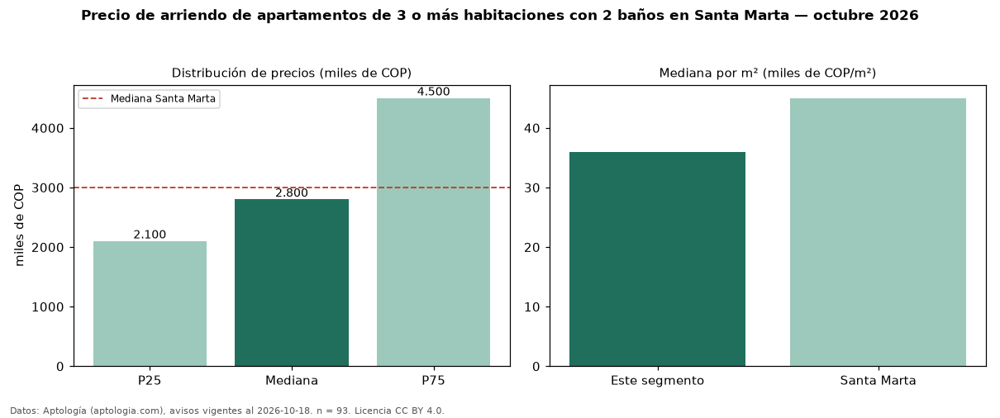

Precio de arriendo de apartamentos de 3 o más habitaciones con 2 baños en Santa Marta — octubre 2026
COP 2,80 millones al mes es el canon mediano de apartamentos de 3 o más habitaciones con 2 baños en arriendo en Santa Marta (n = 93 avisos). Eso es 33 % menos que la mediana de los apartamentos de 3 o más habitaciones en arriendo de Santa Marta (COP 4,17 millones, n = 192); este segmento reúne el 48 % de esos avisos. Por metro cuadrado, la mediana es COP 36.000/m² al mes (n = 91), 1 % por debajo de los apartamentos de 3 o más habitaciones en arriendo de Santa Marta (COP 36.197/m²). El área mediana anunciada es 88 m². La administración mediana declarada es COP 696.500 al mes (n = 26), aparte del canon. La mitad central de los avisos va de COP 2,10 millones a COP 4,50 millones (razón 2,1), una dispersión alta. El estrato más frecuente es 6 (34 % de los avisos con estrato). La mediana de todos los apartamentos en arriendo de Santa Marta es COP 3,00 millones (−7 % de diferencia). Datos: Aptología (aptologia.com), CC BY 4.0 — https://www.aptologia.com/arriendo/santa-marta. Archivos: PDF, CSV con las cifras y gráfica PNG.

| Avisos únicos | 93 |
|---|---|
| Percentil 25 | COP 2.100.000 |
| Mediana | COP 2.800.000 |
| Percentil 75 | COP 4.500.000 |
| Mediana por m² | COP 36.000 |
Fuente: avisos vigentes de portales inmobiliarios recopilados por Aptología, deduplicados (mínimo 30 avisos únicos por celda). Precios pedidos, no cerrados. Fecha: 2026-10-18.